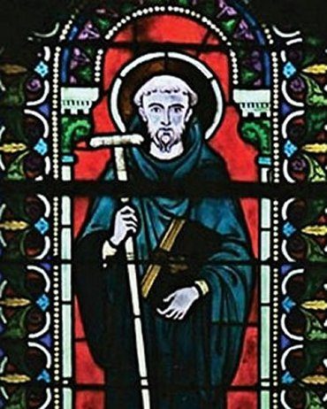
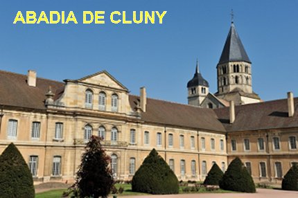
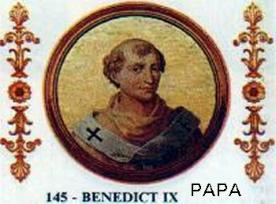
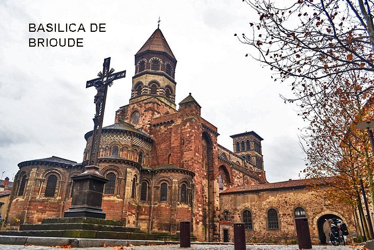

“CLUNY SOBRESSAI
NA EUROPA”

Odilon tinha um passo grave e uma voz admirável. Falava bem. Era uma alegria vê-lo, porque seu rosto angélico guardava um olhar sereno, e cada um dos seus movimentos, dos seus gestos, exprimia a grandeza da sua honestidade. Assim como, por cada dobra das suas vestes se revelava a sua dignidade e o grande respeito, pela sua própria pessoa e pelos outros. Ele tinha em si qualquer coisa luminosa, que atraía e convidava a imitá-lo e a venerá-lo. Significa entender, que a luz da Graça de DEUS habitava visivelmente o seu interior, brilhava no seu corpo mostrando a grandeza e beleza da sua alma. Por isso mesmo, com os mansos mostrava-se sorridente e acolhedor. Mas com os orgulhosos e rebeldes, tornava-se fechado e terrível, a ponto deles não conseguirem suportar o seu olhar. Na verdade, a natureza fez dele um homem admiravelmente harmonioso e organizado. Ele também se preocupou em registrar fatos e acontecimentos em Cluny no presente e durante as expansões ao longo dos anos, para exemplo e estimulo da Comunidade no futuro. Por isso, mandou o Monge Radolphus Glaber e o Monge Jotsald escrever toda a história da Abadia de Cluny.
Sua administração como Abade ficou evidenciada pela extrema gentileza de seu governo. Era comum ele dizer que, entre os dois extremos, ele preferia ofender pela ternura, ou por uma severidade muito rígida. Ele era conhecido por mostrar misericórdia indiscriminadamente, ou seja, mesmo para aqueles que as pessoas diziam que não mereciam. Em resposta ele dizia: “Eu preferiria ser misericordiosamente julgado por ter demonstrado misericórdia, do que ser cruelmente condenado por ter demonstrado crueldade”.
PAZ E TRÉGUA DE DEUS
A “Trégua de DEUS”
surgiu no século XI, em meio à anarquia do feudalismo, com o objetivo de reforçar
e impor 
Enquanto a “Trégua de DEUS” era uma suspensão temporária no inicio das hostilidades, sua jurisdição era mais ampla, e foi gradativamente aplicada para o perfeito cumprimento da “Trégua de DEUS”. Ela confirmou a paz permanente para todas as Igrejas e seus terrenos, monges, funcionários e bens móveis, todas as mulheres, peregrinos, comerciantes e seus servos, o gado e os cavalos; e também homens trabalhando nos campos. Para todas as pessoas, a paz era necessária durante o tempo do Advento, na época da Quaresma, e desde o início dos dias da Rogação (Ladainha de Todos os Santos) até oito dias após o Pentecostes. Esta proibição foi posteriormente estendida há dias da semana, como por exemplo, nas quintas-feiras em memória da Ascensão do SENHOR, nas sextas-feiras em memória da paixão de JESUS, aos sábados em honra de NOSSA SENHORA, e aos domingos em memória da Ressurreição. Em meados do século XII, o número de dias proibidos foi estendido ainda mais, permanecendo apenas oitenta dias por ano, para a luta dos que desejavam.
A GRANDE PROJEÇÃO DE CLUNY

A Abadia de Cluny, na Borgonha, França, foi à alma e a cabeça do monasticismo medieval tendo alcançado o comando de um conjunto de mais de 1.000 Abadias e de Casas Monásticas em toda Europa. Na construção desse imenso patrimônio moral e cultural destacaram-se certas almas de elite, verdadeiros heróis dos claustros que seguiam as pegadas do grande São Bento (que foi a Regra escolhida e adotada). Esses claustros irradiavam a espiritualidade, a cultura e a civilização para toda a Cristandade. Os Monges Clunicenses dedicavam com disposição e amor a Celebração das Horas Litúrgicas; as procissões solenes e devotas; a Santa Missa bem preparada e bem celebrada; o Canto dos Salmos; incentivavam o cultivo e propagação do culto a SANTÍSSIMA VIRGEM MARIA; tinham especial atenção com a Liturgia, porque estavam cientes de que ela dava uma idéia da Liturgia no Céu; procuravam caprichar na arquitetura dos Templos, na certeza de que estando combinada com a Arte, contribuíam para a beleza e solenidade dos ritos
A administração de Santo Odilon se estendeu por mais de meio século e modelou para sempre o perfil moral de Cluny. Segundo a Enciclopédia Católica: “O rápido e altamente qualificado desenvolvimento do Mosteiro e da sua irradiação na Igreja é devido principalmente a sua caridade, o seu admirável cavalheirismo, assim como o seu apostolado e talento organizativo”.
OS APROVEITADORES
Durante aquela época, era muito
comum que senhores seculares e governantes locais tentassem assumir o controle
de Mosteiros ou tomar suas propriedades. Não 
Em 997, ele foi a Roma para garantir o status de Cluny. Em 998 ele obteve de Papa Gregório V, completa liberdade para Cluny, com relação aos Bispos Diocesanos e em 1024, conseguiu a extensão desse privilégio a todas as Abadias e priorados dependentes de Cluny.
Ele participou do Sínodo de Ansa em 1024 para discutir esse problema e conseguiu com sucesso que os Bispos presentes no sínodo fizessem uma declaração excomungando qualquer um que atacasse as propriedades Clunicenses.
HAVIA AQUELES CONTRÁRIOS
Em 1025, Gauzlin, Bispo de Mâcon, alegou que o Arcebispo de Viena precisava de sua aprovação para ordenar os Monges de Cluny. Em resposta a isso, o Abade Odilon produziu os documentos papais que concediam a Cluny liberdade do controle diocesano local. Um conselho em Ansa, no sul da Gália, condenou a posição de Odilon, porque alegou que o Concílio de Calcedônia (em 451) havia decretado que a ordenação dos Monges deveria ocorrer com o consentimento diocesano. Em resposta a isso, o Papa escreveu cartas a várias partes envolvidas na disputa e condenou a posição de Gauzlin. O Papa decretou ainda que qualquer Bispo que tentasse entrar nos Mosteiros Clunicenses para celebrar uma missa sofreria excomunhão automática, a menos que tivesse sido convidado pelo Abade. A disputa ocorre há anos, existindo até hoje.